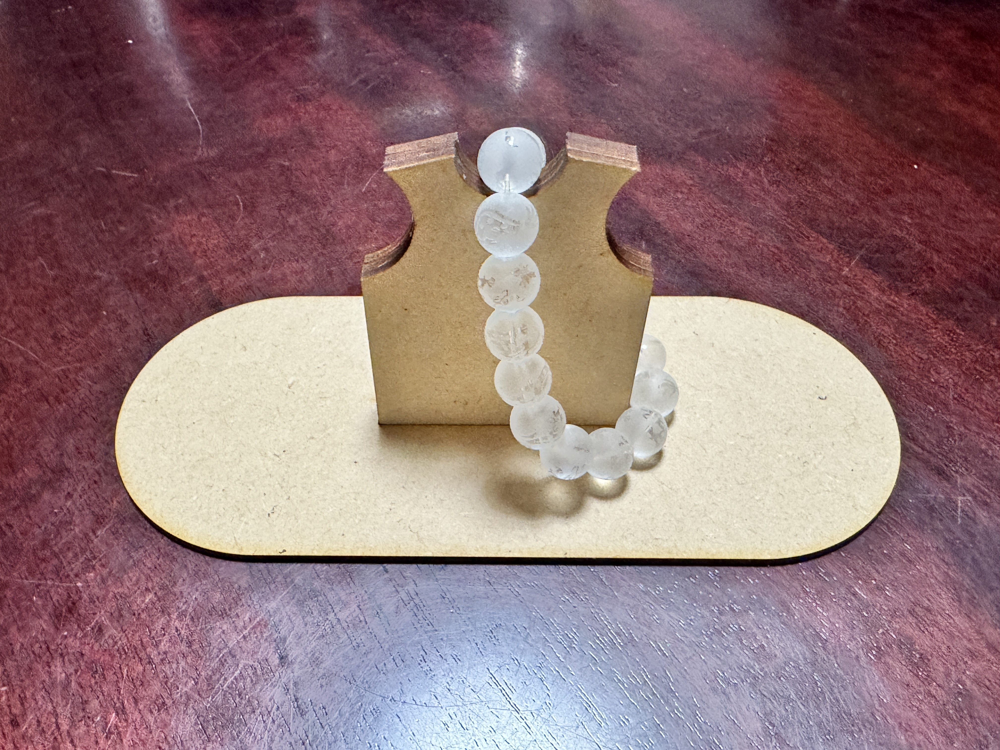
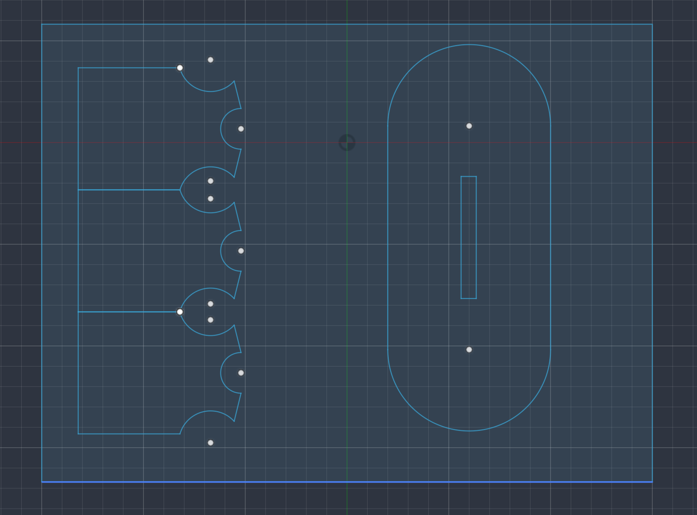
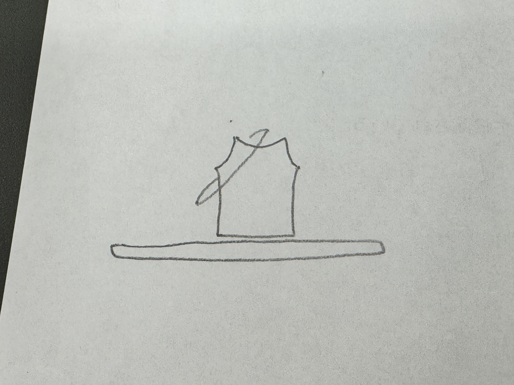

レーザーカットでモノづくり
この作品は私が高校時代に所属していた陸上部のユニフォームをモチーフに作りました。
なぜユニフォームなのに襷？と思いませんか？
その理由は、この作品はアクセサリーを肩に位置するところにかけられるようにデザインしそれを襷に見立てているからです。
という意味を込めて作りました。

製作するときに意識したことは、薄くなってしまい、強度が弱くなってしまうことを避けることです。

一目瞭然ですが、ユニフォームの形を３つ作って、強度が弱くなってしまう部分を補強しました。

レーザーカッターで切り出すためのデータ(DXF形式)です。
DXFファイルをダウンロード感想としては、レーザーカットでモノづくりをすることは初めてだったので、どのように作るのか、どのような形にするのか、どのような素材を使うのかなど、考えることが多く、とても勉強になりました。
それと同時に、レーザーカットでモノづくりをすることは、３Dプリントよりも、より精密に作ることができると感じました。
また、今回の作品は、私にとって思い出のあるものをモチーフに作ったので、より愛着が湧きました。
そしてフュージョン360を使って、できることが多くて感動しました。